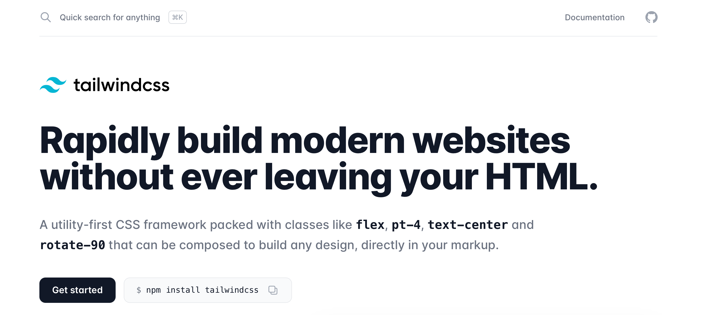

IE11 is ☠
New CSS features are supported in all evergreen browsers
:root {
--primary-theme-color: #ff0;
}
.someSelector {
background: var(--primary-theme-color);
}
No need for flexbox grid
.root {
display: grid;
}
CSS preprocessor
@mixin mobile-only {
@media (max-width: $mobile-width) {
@content;
}
}
.root {
@include mobile {
display: none;
}
}
$ npm install node-sass --save
Locally scoped CSS
.root { color: red; }
to
.root-h2l5l { color: red; }
import styles from './Component.module.scss';
<div className={styles.root} />
Some nice to know approaches for styling
Utility-first CSS framework
Elements are styled using utility CSS classes.

Extending CSS with JS features
There are different CSS in JS approaches, e.g.: